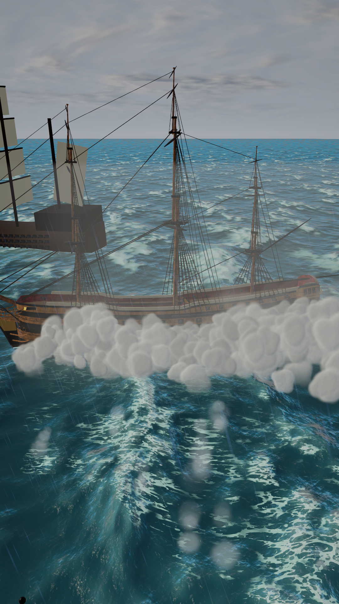
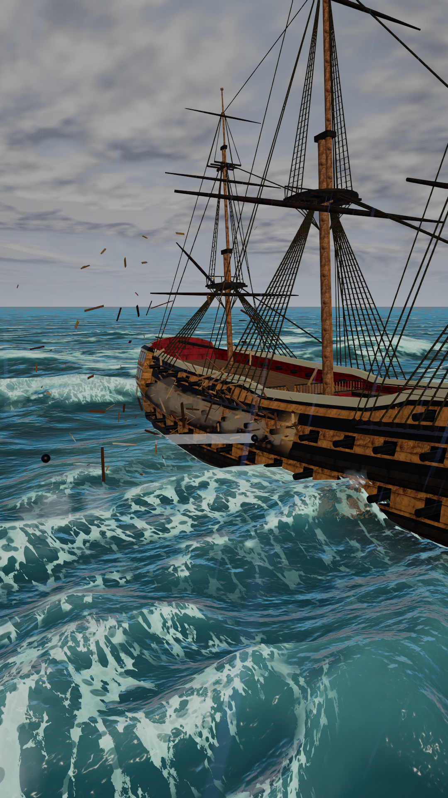
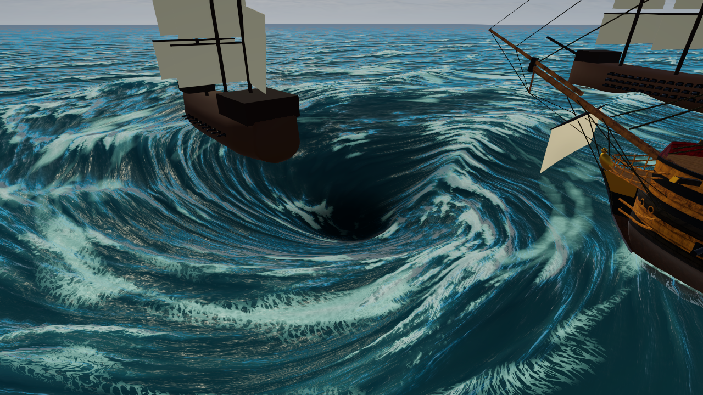

Sea of Traders
Wind, waves and broadsides: the Age of Sail, up close.

What it is
Sea of Traders is an Age of Sail game set in the 1700s. You run a harbour town, Port Haven, and send your ships out to sea. The world map is a Caribbean-inspired region of islands and coastlines with 76 ports, forts, towns and plantations. Your home port and the open world map are two views of one running world, and you switch between them instantly. Close-up battles between ships at sea are a mode of their own.
At sea, you sail the ships yourself. Wind and sails decide how fast you go, so each heading has to be worked against the breeze. In battle, you take the helm of a heavy warship, swing round to bring a broadside to bear, and fire the guns yourself through clouds of gun smoke.
Spotlight
Broadsides by hand
You don't click a target and watch a dice roll. You swing your ship round, drop into the aim view on the side facing your target, and fire the guns yourself. You can fire one gun at a time, or ripple the whole side from bow to stern, stern to bow, or in random order. Every gun reloads on its own timer, so after a full broadside the side comes back to life one cannon at a time. Hits throw splinters off the target's hull, and every shot adds to a bank of gun smoke that drifts downwind until, in a long fight, it can hide the other ships completely.


A sea that fights back
The ocean is a full wave simulation, and the ships float on the same surface you see. When a swell lifts your bow, the ship really is on that wave. The sea can turn from a calm, sunlit swell into a dark storm with driving rain, lightning and thunder rolling across the water. Foam builds on breaking crests and trails behind every hull, and the wind tears spray off the wave tops. The same simulation can even twist the sea into a deep, spinning whirlpool.

Sailing by the wind
On the world map you sail the ship yourself, and the wind makes the rules. Head too close into it and your sails luff and the ship stalls. A broad reach is the fastest point of sail, and running dead downwind is a little slower. The trade winds shift in strength and direction over time, and a wind rose on screen shows your best speed on every heading. Plotting a passage between islands means reading the wind, not just pointing at a port.
Features
- Home port and world map in one running world, with instant switching between them
- Port Haven: a harbour town with a pier, market stalls, a plaza, streets and townsfolk
- A free strategy-style camera over the town: pan, zoom and rotate
- A warehouse for ten trade goods, with a gold purse
- A world map with 76 named ports, forts, towns and plantations
- Prevailing trade winds and a wind-rose HUD
- Heavy-ship handling: slow sail setting, building speed and a rudder that only bites when moving
- Cloth sails that set, furl and billow in the wind
- Several ship types, including a three-masted ship of the line
- Hands-on broadsides with per-gun reload timers
- Switch control between the ships in your fleet
- Muzzle flash, gun smoke, splashes and flying splinters
- A simulated ocean with foam, wakes and spray
- Weather from calm to full storm, with rain, lightning, thunder and sea mist